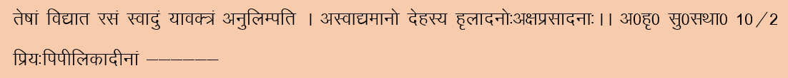
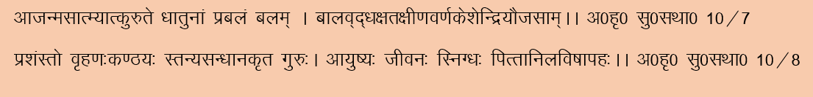
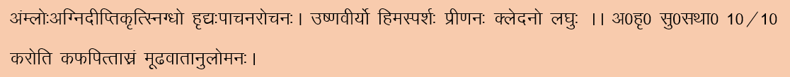
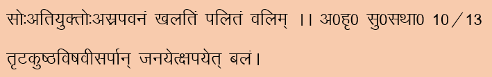
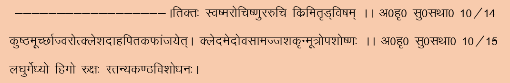
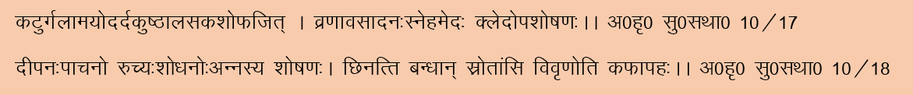
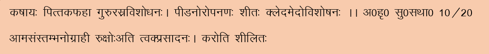
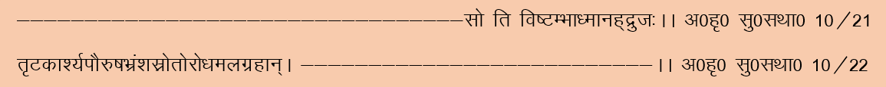

Balance diet
Balance diet is a healthy diet that contain all the nutrients in balanced manner. The nutrients of diet are classified as :
- Macro nutrients – These nutrients makes the bulk portion of diet so it is called as macro nutrients. These macro nutrients are further classified into following categories according to their functions and molecular structure.
- Carbohydrate- Main function of carbohydrate is to give energy. After digestion it break downs to glucose. Glucose burn as fuel in mitochondria by oxygen and give energy. It provides energy 4 calories per gram. This energy is utilized by the body for different function. There are two types of carbohydrates Simple and Complex. Simple carbohydrates contain one or two sugars. It takes less time to digest and gives instant energy. It is useful when you are exhausted due to hard work, hypo glycemia, diarrhoea and dehydration. Simple carbohydrates are abundant in fruits, table sugar, honey and sweetened processed foods. While complex carbohydrates are made of three or more linked sugars. It take longer to digest than simple carbohydrates and promote satiety. Plant-based foods and whole grains are good sources of complex carbohydrates. It has low glycaemic index so it is good for diabetic Person. As it takes time to digest and develop satiety so it is good for obese person and in high cholesterol condition.
- Protein- Main function of Protein is to repair the tissues. It also provide energy when required. It provides energy 4 calories per gram. After digestion it break downs to amino acid. There are 20 types of amino acids nine of them are essential must come from the diet others can be formed by the body whenever it required. Legumes, milk, egg, Fishes and mutton are the main sources of protein.
- Fats- Main function of Fat is to give energy. It provides energy 9 calories per gram. It is called as reserve food in the body. After digestion it break downs to Fatty acid and glycerol. Fats are classified into four categories, based on their chemical structure: monounsaturated, polyunsaturated, saturated and trans fats. Trans fats are man-made and considered the unhealthiest because they raise bad LDL cholesterol and lower good HDL cholesterol. Saturated fats usually come from animal fats and tend to raise bad cholesterol. Unsaturated fats help lower bad cholesterol. Fish oil and vegetable fats are the main sources of unsaturated fats.
- Fibre. It is undigested part of the food. But it plays very important role in maintaining your health. It is classified into to categories. First is soluble part that dissolved in water, and get absorbed in the body. It helps in lowering down bad cholesterol LDL and increases good cholesterol HDL. Other is insoluble part. It forms roughage in digestive tract and help to evacuate bowel and prevent constipation. Fruits and vegetables are main sources of fibre.
- Water- Water is the very essential nutrient for the body. Body contains 75% of water. It helps to evacuate toxins from the body. It also helps to regulate body temperature. It helps to circulate different nutrients in the body. One should take 2-3 litters of water daily. Water should be clean and free from toxins, contaminated and polluted water causes disease like diarrhoea, dysentery and vomiting.
- Micro nutrients – These are less proportion in diet but are very essential for the body. It helps in different metabolic activities in the body. They are-
- Vitamins- It is very important micronutrient and play vital role in different biological activities such as blood formation, bone formation, to boost immunity and work as anti-oxidant etc. they are divided into two categories-
- Water soluble vitamins- Vitamin B and Vitamin C are water soluble vitamins. They are mostly founds in dry fruits, fruits and vegetables.
-
Fat soluble Vitamins- Vitamin A, Vitamin D, Vitamin E and Vitamin K are fat soluble Vitamin. Dry fruits, Dairy products, ghee and oil are the main sources of these vitamins.
VITAMIN-CHART |
Water soluble Vitamins |
| Name and Requirement (per day) |
Functions |
Resources |
Defficency
Diseases |
Vitamin B1
(Thiamine)
1.2mg |
- Breaking down carbohydrate molecules from food
- Creating certain neuro-transmitters (brain chemicals)
- Producing fatty acids
- Synthesizing certain hormones
|
- Veg-Whole grains, Bread, Cereal, Pasta, Rice and
Legumes such as Black-beans, Soybean-seeds and Nuts
- Non veg – Pork, Trout(Fish)
|
- Weight loss
- Loss of appetite
- Memory loss
- Heart problems
- Tingling and numbness in the hands and feet
- Poss of muscle mass
- Poor reflexes
|
Vitamin B2
(Riboflavin)
1.3 mg
|
- Energy production
- Helps body in breaking down of fats, drugs, and steroid hormones
- Converting tryptophan into niacin (vitamin B-3)
- Converting vitamin B-6 into a coenzyme that the body needs
|
- Veg- Cereals, Oat meal, mushrooms, almonds, yogurt and milk
- Non-Veg-Mutton
|
- Skin disorders
- Sores at the corners of the mouth
- Swelling of the mouth and throat
- Swollen, cracked lips
- Hair loss
- Red, itchy eyes
|
Vitamin B3
(Niacin)
16mg
|
- Changing the energy in carbohydrates, fats, and proteins into a form the body can use
- Metabolic processes in the body’s cells
- Communication among cells
- Expression of DNA in cells
|
- Veg- Plant-based foods including nuts, legumes, and grains contain a natural form of niacin that the body cannot use as easily. However, manufacturers add niacin to foods such as cereals, and the body can easily use this form
- Non-veg- Animal-based foods such as Mutton, poultry, and fish are high in NAD, which the body can easily use
|
- Brown discoloration of skin exposed to sunlight
- Patches on skin with a rough appearance
- A bright red tongue
- Vomiting, diarrhoea or constipation, headache, fatigue and depression.
|
Vitamin B5
(Pantothenic acid)
5mg
|
- Pantothenic acid is necessary for the body to create new coenzymes, proteins, and fats.
- Red blood cells carry pantothenic acid throughout the body so it can use the nutrient in a variety of processes for energy and metabolism.
|
- Veg-Mushrooms, sunflower seeds, avocado and cereals.
- Non veg-Mutton
|
- Numbness and burning of the hands and feet
- Headache
- Irritability
- Restlessness and poor sleep
- Poor appetite
|
Vitamin B6
(Pyridoxin)
1.7mg
|
- Breaking down carbohydrates and fats
- Amino acid metabolism
- Brain development
- Boosts immunity
|
- Veg- Potatoes, fortified cereals
- Non veg- Mutton, eggs, salmon, pork.
|
- Anemia
- Scaling of lips
- Cracks at corner of mouth
- Swollen tongue
- Week immune system
- Confusion
- Depression
|
Vitamin B7
(Biotin)
30mcg
|
- Breaking down fats, carbohydrates, and protein
- Communication among cells in the body
• regulation of DNA
|
- Veg- Sunflower seeds and cheese
- Non veg- Mutton, eggs, salmon, pork.
|
- Thinning of the hair
- A scaly rash around eyes, nose, and mouth
- Brittle nails
- Depression
- Fatigue
|
Vitamin B9
(Folate)
400mcg
|
- DNA replication
- Metabolism of vitamins
- Metabolism of amino acids
- Proper cell division
|
- Veg- Dark green leafy vegetables
Avocado, papaya, orange juice, beans
nuts
- Non-veg- Eggs, mutton
|
- Weakness
- Headache
- Heart palpitations
- Irritability
- Sore in mouth or on tongue
- Pathological changes in Skin, hair, nail
|
Vitamin B12 (Cobalamin)
2.5mg |
- Creating new RBCs
- DNA synthesis
- Improves Brain and neurological function
- Helps in Fat and protein metabolism
|
- Veg- Milk and yogurt
- Non-veg- Clams (Shell-fish), mutton, salmon
|
- Fatigue
- Weight loss
- Constipation
- Poor appetite
- Numbness and tingling in the hands and feet
- Memory loss
- Depression
|
Vitamin C
(Ascorbic acid)
14mg
|
- Improves Skin
- Strenthen Bones and Cartilage
- Strenthen Ligaments and tendons
- Improves blood vessel walls
- Strenthen Teeth
|
- Veg- Citrus fruits like oranges, grapefruit, limes and lemons.
Berries such as blackcurrants, strawberries, raspberries, blueberries and cranberries.
Cantaloupe melon and watermelon.
Kiwi fruit.
Vegetables such as spinach, green and red peppers, tomatoes, cauliflower, cabbage, broccoli, Brussels sprouts and potatoes.
Cooking fruit and vegetables reduces their vitamin C content by around a third
- Non-veg- Fish
|
- Tiredness and weakness
- Muscle and joint pains
- Easy bruising
- Spots that look like tiny, red-blue bruises on your skin
- Dry skin and splitting hair
- Swelling and discoloration of your gums
- Sudden and unexpected bleeding from your gums
- Nosebleeds
- Poor healing of wounds
- Joint pain and weight loss
|
Fat soluble vitamins |
Vitamin A
700mcg |
- Improves Vision
- Enhances Immunity power
|
- Veg- Plant sources provide carotenoids, such as beta-carotene, which is a powerful antioxidant. The body can convert these into vitamin A.
For this reason, lists of ingredients often show vitamin A content as “vitamin A RAE.” RAE means “retinol activity equivalents.”
●Sources of beta carotene include:
sweet potato, kale, spinach, and other green, leafy vegetables, carrots
cantaloupe, black-eyed peas
fortified breakfast cereals
cheese, milk, and other dairy products
- Non veg- Animal sources provide preformed vitamin A, or retinols. This type is ready for the body to use.
Animal sources of vitamin A include:
fish liver oil, beef liver
|
- Loss of vision
Overdose of Vitamin A leads to :
- It can affect: people who take vitamin A supplements,
those with a high intake of fish liver oil,
people who take medications that contain retinoids, such as acitretin (Soria Tane), a treatment for psoriasis.
During pregnancy, high levels of vitamin A can harm a growing fetus.
Symptoms of an overdose include:
Headaches, fatigue, nausea and dizziness. |
Vitamin D
600mcg |
- Maintains bone health
- Boost immunity
|
- The body obtains the compounds it needs to make vitamin D from food.
● It also produces vitamin D when ultraviolet (UV) light meets the skin.
- Vitamin D is not a single substance but a group of compounds collectively known as calciferol.
The body absorbs calciferol into the bloodstream and then converts it to calcitriol.
- Two types that occurs naturally :
● Vitamin D-3, found in animal fats oily fish and fish oils, beef liver, eggs.
● Vitamin D-2, found in plants, such as mushrooms, fortified dairy products, plant-based milks, and cereals
|
- Osteoporosis or loss of bone mass
- Osteomalacia when bones become soft
- Ricket - when a child’s bones does not develop properly.
- Increased risk of infection and autoimmunity
Overdose:
It is rare for a person to have too much vitamin D, but using supplements it could be triggered.
- Having too much vitamin D could lead to high levels of calcium in blood.
This can lead to: nausea, headaches,
low appetite and weight loss, a build-up of calcium in tissues and blood vessels
heart or kidney damage.
|
Vitamin E
15mg |
- Antioxidant
- Boost immunity
- Dilate blood vessels and help prevent clotting
- Spinach and broccoli
kiwi fruit and mango
|
- Wheat germ oil
- Sunflower seeds and oil
- Almonds, hazelnuts, and peanuts
- Spinach and broccoli
kiwi fruit and mango
|
- Nerve and muscle damage that affects movement and coordination
- vision problems
- Weak Immunity power
- As vitamin E is an antioxidant, a long-term deficiency could increase the overall risk of various diseases.
Overdose :
- Obtaining vitamin E through natural sources is unlikely to lead to an overdose, although supplement use can increase this risk.
- People who use blood-thinning medication, such as warfarin (Coumadin) should ask their doctor before taking vitamin E supplements, as these may interfere with blood clotting.
|
Vitamin K
90-120 mcg |
- Helps in clotting of blood.
- Lower the risk of heart disease
- Strenthen bones
- Reduces the building up of calcium in the blood
|
- Vitamin K-1 (phylloquinone), is present in green, leafy vegetables, spinach
and some other plant sources
- Vitamin K-2 (menaquinones), present in animal sources and fermented foods
Food sources of vitamin K-1 and K-2 include: liver, egg yolks, kale, kersley, butter.
|
Results in poor clotting of blood |
-
2.Minerals- It plays very important role in different metabolic activities in the body. It is important for blood formation, Bones formation, Muscle contraction and generation of nerve impulses. It also regulate blood pressure in the body. Like vitamins, they assist enzymes in many body processes. Vitamins are organic substances whereas minerals are inorganic substances. A healthy person need 250 mg of minerals daily. In contrast, the body needs smaller amounts of trace minerals, usually less than 20 milligrams. The trace minerals include fluoride, chromium, iodine, iron, chromium and zinc. Milk, leafy vegetables, dry fruits and meat are the good mineral sources.
Ayurvedic View of balanced diet
Ayurveda is a very natural science. It is an oldest medicinal science. That time there was no concept of nutritional value like carbohydrate, protein, fat, vitamin and minerals. But there it is mentioned that one should include foods of all taste in their diet in balanced proportion to be healthy.
Behind this concept, theory is that body is composed of five universal element Akash (space), Vayu (air), Agni (fire), Jala (water) and Prithvi (earth). There are six taste and each compose of two universal element. So when one consume all types of taste in food in balanced way than the five universal component in the body get balanced and body remains healthy.
More details about these six taste is as below-
1. Swadu (Sweet)- It is composed of water and earth. On eating sweet things it coated the whole mouth gums and teeth by its sticky nature. It nourishes whole body and give good feeling. It is very much liked by ant.
All the macro nutrient Carbohydrate, Protein and Fats comes under this group.
Action- Benefits

• It is liked by every one and every age group. Very less people dislike it.
• It nourishes the whole body and gives strength. As we know sweet things contain glucose in excess amount which give energy to the body.
• It is good for child as well as aged person.
• It works as tonic for weak and exhausted Person.
• It is good for glowing skin, for healthy hair and senses. It gives internal energy to the body.
• It promote growth, good for throat and It promotes milk formation.
• It promote healing and repair wear and tear of the body.
• It is heavy to digest and develop unctuous in the body.
• It is Life giving and Life prolonging. As we see in emergency drip of Dextrose (glucose) is given to serious patient to save their life.
• It Pacify Vata and Pitta dosha in the body. It also help on detoxifying body.
Bad effects-
• On excess consumption of sweet things it leads to obesity, aggravate cough problem (breathing, coughing, sneezing,) and it weakens digestion process.
• On excess use It develops Diabetes, mumps and boil or tumour problem.
2. Amla (Sour)- It is composed of earth and fire. Sour taste give scrubbing effect to mouth make teeth sensitive and body hair erecting. It gives sensation to closing eye, constrict eye brow.
Action- Benefits

• It promote digestive fire, help digestion and improve appetite.
• It is easy to digest.
• It keep body unctuous and is good for heart.
• It is hot in potency and cold in touch.
• It helps in nourishing and keep body moist.
• It help in formation of Kapha, Pitta and blood.
• It helps in releasing gasses from the body and passing flatus.
Harmful defect- On excess use-
• It makes the body loose, reduces vision and vertigo.
• It causes itching in the body, urticaria, blisters, oedema and anaemia.
• It causes thirst, and fever.
3. Lavan (Salt)- It is composed of water and fire. It makes mouth watery by secreting saliva and develop burning in mouth.
Actgion- Benefits
• Salt breaks blockage and open channels by its penetrating property.
• It improves digestion and develop interest of eating.
• It reduces dryness by enhancing sweating.
Harmful effect on excess use

• On excess use it causes Vatrakta (Gout), hair fall (alopacea), Greying hair and wrinkles.
• It develops thirst, skin problem, toxicity and urticaria.
• It reduces strength.
4. Tikta (Bitter)- It is composed of air and space so it is of low calory value. Bitter taste purifies mouth and hurt tongue.
Action – Benefits

• Bitter taste it self is not tasty but it develops taste for other food.
• It acts as anti worm and reduce skin problem by detoxifing the body.
• It helps to reduce fever, reduce thirst and burning in the body.
• It reduces nausea and prevent subconsiousness.
• It passify aggravated pitta and aggravated Kapha.
• It reduces water, fats, stool, urine and semen in the body.
• It is easily digestable, boost memory.
• It is cold in potency means reduces the metabolic rate in the body. Develop dryness in the body.
• Purify breast milk and improve voice.
Harmful effect on excess use-
• It reduces the formation of cells and tissue in the body.
• It aggravate in developing vat related diseases like pain in joint, weakness and other neurological problem.
5. Katu (Pungent)- It is composed of air and fire. It also have low calory valu but are hot in potency so it aggravate metabolic rate in the body. It Trigger tip of Tongue and irritate it.
It aggravate salivation, promote lacrition and secrets watery discharge from nostril. It gives buning sensation to mouth.
Action- Benefits-

• It helps to reduce throat related problem, urticaria and skin related problem.
• It reduces inflammation and clear blockages.
• It promotes healing absorb oilyness, fats and water in the body.
• It improves appetite, promote digestion and develops interest in food.
• It helps in absorbing digested food and evacuate waste from the body.
• It passify kapha dosha, clear passages and open channels of the body.
Harm on excess use-
• It develops thrist on excess intake. Reduces semen and weakens the body.
• It may brings subconsiousness on excess use.
• It may causes tremor and pain in back and lumber region.
6. Kashay (Astringent)- It is composed of air and earth. It brings stiffness in tongue and causes chocking in throat and channels by seasing secretions. It causes constipation.
Action-Benefits-

• It passify Pitta and cough dosha, heavy to digest and purifies blood.
• It is good for healing wounds and reduces fat and absorbs water.
• It is cold in potency means slow down the metabolic activities.
• It blocks toxins to expel out and reduces loose motion.
• It causes dryness on the body and cleans skin.
Harmful effects on excess use-

• On excess intake it causes constipation, distention of abdomen and channel blockage.
• It causes thrist, slimness and sexual debility.